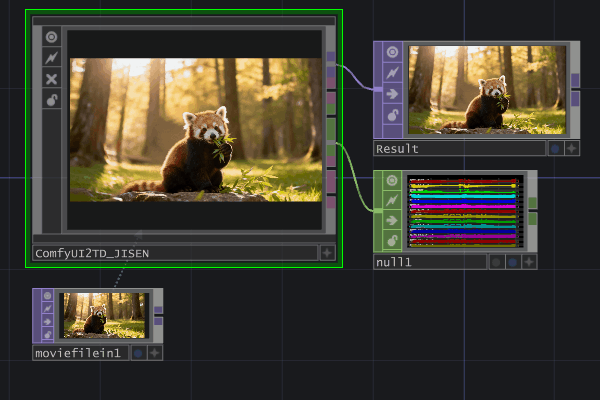
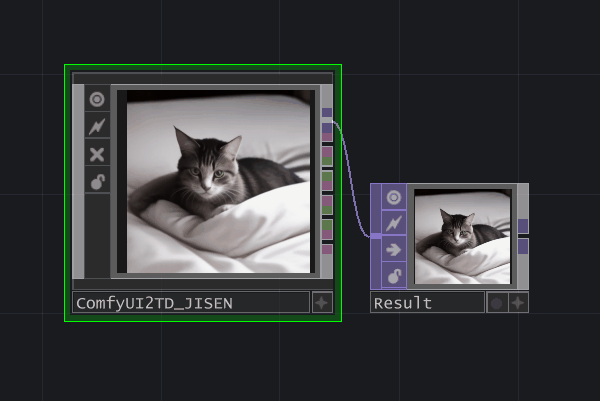
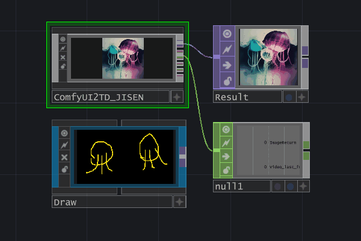
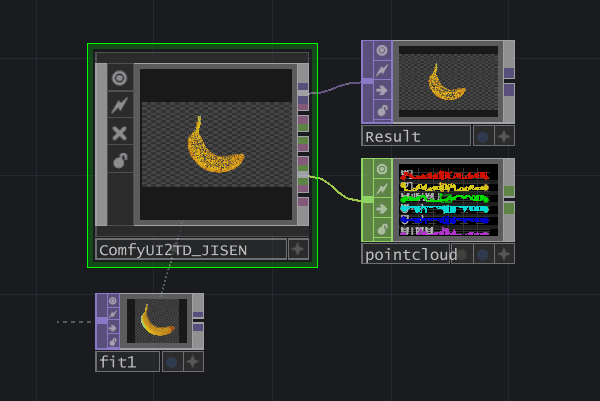

为什么很多人会搜索 ComfyUI-TD
它常被用于 TouchDesigner 接入 ComfyUI、云端 ComfyUI 回传、本地实时视觉系统， 以及点云和 Gaussian Splatting 的可视化工作流。
ComfyUI-TD
ComfyUI 到 TouchDesigner 实时传输节点
ComfyUI-TD 通过更稳定的 WebSocket 工作流，把 图像、视频、音频、 点云 和 Gaussian Splatting PLY 从 ComfyUI 发送到 TouchDesigner。
这个项目适合创作者、技术美术和开发者，用来打通 AI 生成流程与实时媒体系统。

它常被用于 TouchDesigner 接入 ComfyUI、云端 ComfyUI 回传、本地实时视觉系统， 以及点云和 Gaussian Splatting 的可视化工作流。
ComfyUI-TD 的重点是把 ComfyUI 生成数据稳定地实时传输到 TouchDesigner。

将 ComfyUI 生成图像传给 TouchDesigner，并解析为 TOP 流程。

支持视频和音频输出，适合实时视觉、播放和交互式系统。

支持传统点云和 Gaussian Splatting PLY 在 TouchDesigner 中使用。
ComfyUI-TD 需要与 ComfyUI2TD.tox 配合使用，建议同步更新到较新的 tox 版本。
在 ComfyUI-Manager 中搜索 ComfyUI-TD 并直接安装。
将项目复制到 ComfyUI/custom_nodes 目录。
cd custom_nodes
git clone https://github.com/JiSenHua/ComfyUI-TD.git当前教程主要发布在哔哩哔哩，内容为中文。
它是一个将 ComfyUI 生成媒体和 3D 数据实时传输到 TouchDesigner 的自定义节点。
是的。ComfyUI-TD 需要和 ComfyUI2TD.tox 一起使用。
支持。当前支持图像、视频、音频、传统点云 PLY 和 Gaussian Splatting PLY。
有。英文独立页面位于 首页，已通过
hreflang 与本站中文页互相标注。
旧版 ComfyUI2TD.tox 组件基于 TDComfyUI 项目发展而来，感谢 olegchomp
以及相关贡献者。